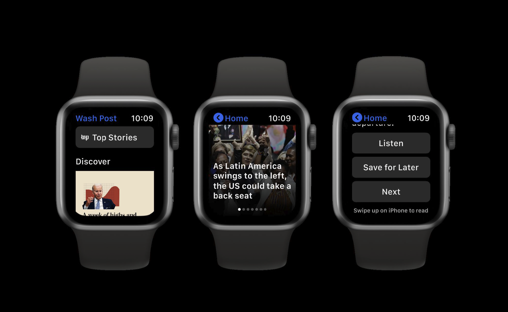
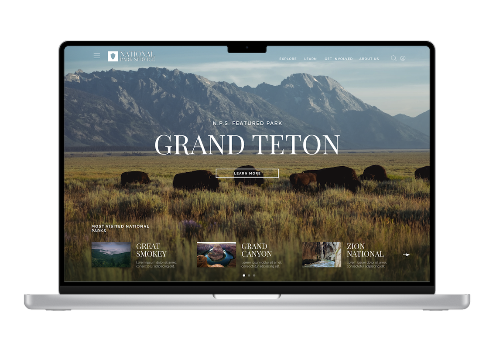

Welcome to my website!

I am a UX Designer based out of Gaithersburg, MD. Connecting Psychology and Design, in order to create distinctive experiences.
My UX Skills

User Research
I conduct user research to gain insights about users' needs and behaviors, which informs design decisions.
Wireframing
I create wireframes to outline the structure and layout of interfaces, which guides the design process.
Prototyping
I create interactive prototypes to test and iterate on designs, which helps to identify and solve problems early.
My Work

Watch OS
An app designed for Apple Watch users to consume The Washington Posts content, outside of the traditional web and app platforms.

National Park Redesign
National Park Services reimagined with a modern take. This responsive web design captures the true essence of nature.